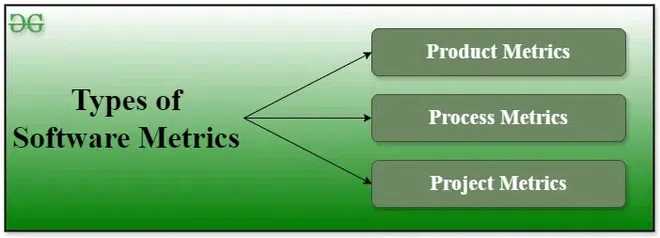

6.1 Software Measurement and Metrics (overview)
Software measurement is the process of assigning numbers or symbols to attributes of a software product or the software process so that the team can understand, control, and improve quality, cost, and schedule. A metric is a quantitative measure derived from those measurements — for example, defect density, function points, or cyclomatic complexity.
Measurement makes software development disciplined and quantifiable, which is one of the core goals of Software Engineering. Without metrics, managers cannot estimate effort reliably, testers cannot judge coverage, and designers cannot compare alternative solutions objectively.

Measurement vs metric
- A measurement is a manifestation of the size, quantity, amount, or dimension of a particular attribute of a product or process.
- A metric is a measurement of the level at which any input belongs to a system, product, or process.
- Measurements provide raw data; metrics interpret that data into indicators useful for decision-making.
Why software is measured
- Measurement helps assess the current quality of a product or process and anticipate future quality trends.
- It supports data-driven project planning — budget control, schedule tracking, and resource allocation.
- Metrics identify bottlenecks and weak areas so the team can target process improvement activities.
- They help ensure compliance with industry standards and organisational quality goals.
- Measurement gives a quantitative basis for evaluating design alternatives, testing depth, and maintenance effort.
Direct vs indirect measurement
- Direct measurement: The product, process, or attribute is measured directly using a standard scale — e.g., counting lines of code or function points.
- Indirect measurement: The quantity is estimated through related parameters — e.g., using productivity (LOC per person-month) to infer effort from size.
The five activities of the measurement process
The software measurement process (governed by ISO standards) consists of five activities:
- Formulation: Derive appropriate measures and metrics to represent the software being studied.
- Collection: Accumulate the data required to compute the formulated metrics.
- Analysis: Compute metric values and apply mathematical or statistical tools.
- Interpretation: Evaluate metric results to gain insight into quality, size, or process performance.
- Feedback: Transmit recommendations derived from metrics back to the development team for corrective action.
Characteristics of good software metrics
- Quantitative: Metrics must be expressible as numerical values.
- Understandable: The computation method must be clearly defined and easy to explain.
- Applicable early: Metrics should be usable in the initial phases of development, not only after coding is complete.
- Repeatable: Repeated measurement under the same conditions should yield consistent results.
- Economical: Collecting and computing the metric should not cost more than the value it provides.
- Language independent: Effective metrics should not depend on a specific programming language (function points are a good example).
Four management functions of metrics
- Planning: Metrics support effort and cost estimation before development begins.
- Organising: Metrics help allocate staff, modules, and testing resources across the project.
- Controlling: Metrics track progress against plan — schedule deviation, cost variance, defect trends.
- Improving: Metrics highlight areas where the process or product quality can be raised in future projects.
Types of software metrics
Product metrics
- Product metrics describe attributes of the software itself — size, complexity, reliability, and maintainability.
- Examples: LOC, function points, Halstead volume, cyclomatic complexity, defect density.
- Size and complexity are classified as product metrics in exams (UGC-NET).
Process metrics
- Process metrics describe the development process that creates the software body.
- Examples: lead time, cycle time, defect density per iteration, process compliance.
- Process quality is assumed to influence product quality — better process → more reliable product.
Project metrics
- Project metrics describe the characteristics and execution of a project as a whole.
- Examples: number of developers, staffing patterns over the lifecycle, cost, schedule, productivity, effort estimation accuracy.
Size-oriented vs function-oriented metrics (overview)
The course groups the main size measures into two families — covered in detail in later sections:
- Size-oriented (white-box / direct): LOC, KLOC, Halstead metrics — based on the actual code or token structure.
- Function-oriented (black-box / indirect): Function Point Analysis — based on user-visible functionality, not implementation language.
- Complexity metrics: Cyclomatic complexity — measures control-flow complexity via a Control Flow Graph (CFG).
These metrics feed into project estimation models such as COCOMO (§3.6) and size estimation techniques (§3.5).
Q: Define software measurement and software metrics. List the five activities of the measurement process and three types of metrics.
Model answer points:
- Measurement = assigning numbers to product/process attributes; metric = quantitative indicator derived from measurements.
- Five activities: formulation, collection, analysis, interpretation, feedback.
- Three types: product (software attributes), process (development activities), project (cost/schedule/staffing).
- Good metric characteristics: quantitative, understandable, repeatable, economical, language independent.
- Direct vs indirect measurement; size-oriented (LOC, Halstead) vs function-oriented (FP).